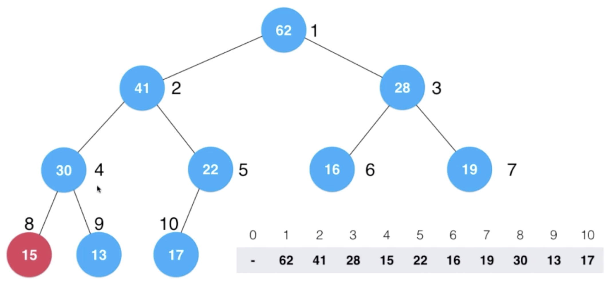

4章：堆和堆排序
4章：堆和堆排序
1. 堆和优先队列
- 优先队列（动态）：
- 操作系统任务调度（一次任务执行完，又来了新的任务或者旧任务的优先级发生了变化），如果使用一般排序，每次任务执行完都要重新排序一次；
- 游戏中选择第一攻击对象，并存入新增加的敌人，也是动态变化的；
- 在 N个元素中选出前 M 个，一般排序：$O(NlogN)$; 优先队列：$O(NlogM)$;
- 不同数据结构实现的优先队列的时间复杂度比较：
- 普通数组入队在最后添加即可，但是出队时要筛选出优先级最高的，并且要移动数组元素（扫描数组找到优先级最高的需要$O(n)$）, 之后移动元素也是$O(n)$，这两个阶段是分开进行的，不嵌套，所以时间复杂度为$O(2*n)$，非$O(n^2)$
- 顺序数组，在入队时要维持顺序性，出队时直接就能取到优先级最高的
- 普通数组和顺序数组，最差情况：$O(n^2)$; 堆：$O(nlogn)$
- 堆就是优先队列，只要封装了对应的enqueue()和 dequeue()即可。入队也是从队尾入，但是入队后自身还会根据堆的性质进行调整，出队时还是从队首出，出队后也会进行调整
2. 堆的实现（以最大堆为例）
基本理论
- 经典的堆实现是使用一棵“完全”二叉树；
- 二叉树中父节点必须都大于其子节点，但是并不说明层级高的节点都比层级低的节点值大（比如两个节点在同一个根节点的两个不同分支上，比如下图中 3 号节点替换成 23，这样它还比左子树的 4 号节点小，虽然层级比较高）；
- 二叉堆是一棵完全二叉树，即除了最后一层，其它层（除最后一层外）都必须满节点且最后一层叶子节点都集中在左侧；
- 二叉堆的实现
- 经典的二叉堆实现是使用一个数组
- 如果根节点存储在数组1 位置，那么标号为 k其左子节点序列号是 2k,右子节点是 2k+1;
- 如果根节点存储在数组 0 位置，那么标号为 k 的左子节点是 2k+1,右子节点是 2k+2
二叉堆（最大堆）的实现
- MaxHeap类封装
- Shift Up 上浮操作，这里加入 52 这个新节点，比起父节点大，所以不满足最大堆性质，需要上浮；

- 此时 52 已经比起父节点小了，就不需要上浮了
- ShiftDown 下沉操作，这里删除根节点
- 删除根节点 62
- 取出右下叶子节点替换删除节点
- 设置 count，因为 16 节点已经替换上去，不再是叶子节点了，所以要防止再次访问到
- 将替换节点 16 与左右孩子中较大的进行交换
- 直到 16 比其左右子节点都大为止
- 删除根节点 62
- insert(): 添加时要进行容量检查，看是否有空间还能容纳新元素，所以可以设置一个 capacity 变量；添加后要进行 Shift Up 操作–添加的元素总在数组最后一位，即 count 计数所在位置，从这里开始执行上浮操作；
- shiftUp();算法复杂度$O(logn)$
- 删除元素
- ShiftDown;算法复杂度$O(logn)$
- MaxHeap类封装
堆排序
- 复杂度 O(nlogn)
- 依次从堆中取出，对于最大堆，每次取出的都是最大的，存入数组，就是有序的了；这里每次取出最大的，就相当于从堆中删除一个元素，按照上面提到的删除操作，要找到替换节点并 shiftDown操作（该操作参见上面内容）；
Heapify
- 原理(这里仍然从索引 1 开始存放节点，用数组存放完全二叉树)
- 叶子节点可以看做最大堆或者最小堆
- 见上图，这个无序完全二叉树中第一个非叶子节点的序号是最后一个叶子节点 / 2 （$10/2 = 5$）
- 接下来以这个非叶子节点开始进行heapify,使其满足最大堆的性质（根节点比子节点大），即在该节点上执行 shiftDown 即可（heapify 中只需要 shiftDown，因为会逐层下沉直到树根节点为止） – 下面前两幅图说明了从最后一个非叶子节点开始 shiftDown,后三幅图说明了最后一个非叶子节点（树根节点）的下沉过程；
- 
- 叶子节点可以看做最大堆或者最小堆
- Heapify 实现
- 这里 MaxHeap 实际上就是 Heapify,传入一个数组，将数组元素存入 data 数组中（因为完全二叉树是用数组表示的，堆是一个完全二叉树），并且因为二叉树索引一般从 1 开始，所以偏移 1 位进行赋值（从 0 赋值也可以，只不过一个根节点k的子节点的索引就要偏移2k+1和 2k+2了）；之后从最后一个非叶子节点（count/2）开始进行下沉操作；这样就把一个无序的堆整合成了最大堆；

- 堆排序可以理解为：1. 首先将无序元素存入堆（数组表示的完全二叉树），2. 然后执行 heapify 将其整合成一个最大堆（也可以是最小堆），3. 之后再从堆中依次取出最大值，并存入一个数组，就得到了有序的数组（heapify 后得到的只是一个堆，但还不是一个有序数组，还要将堆顶元素一个一个取出，每次取出再 hepify，最后才能得到一个有序数组）；
- 原理(这里仍然从索引 1 开始存放节点，用数组存放完全二叉树)
堆排序效率不如归并排序和快速排序，所以一般不使用堆排序，堆更多的用于动态数据的维护；但是对堆进行 heapify 还是比将元素一个一个插入堆中效率要高；
将 n 个元素逐个插入空堆中，算法复杂度是O(nlogn)
heapify 的过程，时间复杂度为$O(n)$
关于 heapify 的时间复杂度为什么是$O(n)$，从代码上看似乎是$O(n+nlogn)=O(nlogn)$才对；实际上不是这样的，注意这里只有一半的节点（完全二叉树，非叶子节点只占总节点的一半），并且每个节点 shiftDown 的次数也不同，最大是 logn次，即执行 logn 次交换；
Now, take a look at the image, there are:
n/2^1 green nodes with height 0 (here 23/2 = 12)
n/2^2 red nodes with height 1 (here 23/4 = 6)
n/2^3 blue node with height 2 (here 23/8 = 3)
n/2^4 purple nodes with height 3 (here 23/16 = 2)
so there are n/2^(h+1) nodes for height hTo find the time complexity lets count the amount of work done or max no of iterations performed by each node. now it can be noticed that each node can perform(atmost) iterations == height of the node.
green = n/2^1 * 0 (no iterations since no children)
red = n/2^2 * 1 (heapify will perform atmost one swap for each red node)
blue = n/2^3 * 2 (heapify will perform atmost two swaps for each blue node)
purple = n/4^3 * 3
so for any nodes with height h maximum work done is n/2^(h+1) * hNow total work done is:
(n/2^1 * 0) + (n/2^2 * 1)+ (n/2^3 * 2) + (n/2^4 * 3) +…+ (n/2^(h+1) * h)
= n * ( 0 + 1/4 + 2/8 + 3/16 +…+ h/2^(h+1) )now for any value of h, the sequence：
( 0 + 1/4 + 2/8 + 3/16 +…+ h/2^(h+1) )
will never exceed 1,
Thus the time complexity will never exceed O(n) for building heap.
这里堆排序为data数组分配了空间，可以对这个进行优化，在原数组就实现堆排序；
原地堆排序（优化的堆排序）
- 实际上一个数组就可以看成一个堆，只不过是无序的；
- 通过 heapify 可以将这个数组转换成最大堆；
- 对于得到的最大堆，每次数组中第一个元素肯定是堆顶元素，是最大值，将其与数组末尾元素交换，整个数组中的最大值就已经放到了数组末尾了（所以从小到大排序就用最大堆，从大到小排序就用最小堆）；
- 之后数组前 n-1个元素又变成了一个非最大堆，再次执行 heapify 操作转换成最大堆，之后再把数组第一个即堆顶元素取出与数组倒数第二个元素交换位置；
- 之后再对前 n-2个元素进行 heapify，最终得到的就是一个有序数组；
- 总结：
- 与之前的普通堆排序相比，省去了为从堆中依次取出最大值存入的目的数组而开辟的空间；
- 不管是普通堆排序还是优化了的原地堆排序，都要不断的执行 heapify 的过程；
- 此时需要对数组索引 0 存入第一个堆节点进行操作（当然，还可以将传入的数组 arr 往 data 数组中赋值时，跳过索引 0，从 1 开始存放，这样就能按照从索引 1 开始执行堆中的操作了），与上面熟悉的从 1 开始有所不同，首先子孩子节点索引有变化；其次最后一个非叶子节点求取方法有变化，变化参加下图：
- 代码实现：
- 首先对从索引 0 开始的数组（无序堆）进行 heapify，然后交换堆顶和数组末尾元素；之后再次 heapify，再次取出堆顶元素和数组倒数第二个进行交换；这里实际上把 heapify 和元素交换放在了一起（参见上面 heapify 的过程,这里没复用上面的 heapify 函数是因为那个是从索引 1 开始操作的）；
- __shiftDown 操作(从数组索引 0 开始的堆）
- 首先对从索引 0 开始的数组（无序堆）进行 heapify，然后交换堆顶和数组末尾元素；之后再次 heapify，再次取出堆顶元素和数组倒数第二个进行交换；这里实际上把 heapify 和元素交换放在了一起（参见上面 heapify 的过程,这里没复用上面的 heapify 函数是因为那个是从索引 1 开始操作的）；
各种排序算法比较：
- 空间复杂度：
- 插入排序在有序状态会变成成O(n)，只需要比较一次；快速排序在特殊情况下（有序状态时）会退化成 o(n^2);
- 后三种排序存在常数上的差异，快速排序比较占优，所以快速排序速度比较快，而其出现极端情况退化成O(n^2)的可能性很小；一般系统级别的排序都是快速排序实现的；对于有大量重复键值的可以采用三路快速排序；
- 原地排序：
- 归并排序必须开辟额外空间完成归并过程，如果对于空间比较敏感，归并排序不适合；
- 额外空间：
- 插入排序和原地堆排序只需要开辟一个空间用于元素交换过程，所以额外空间是 O(1)级别；
- 归并排序需要 O(n)的空间用于归并过程；归并是递归实现，有 logn 层，要开辟 logn 层栈空间，保存递归过程中的临时变量，所以空间需要的是：n+logn，而 n 远大于 logn，所以总体是O(n);
- 快速排序采用递归方式排序，有 logn层，需要logn层的栈空间，保存每次递归过程中的临时变量，供递归返回时使用；
- 是否稳定排序
- 稳定定义：相等元素的相对位置没有变化
- 插入和归并排序是稳定的，快速排序和堆排序是不稳定的；
- 插入排序的稳定性：拿未排序的 3 与前面每个元素比较，判断后面元素小于前面元素时才插入前面，保证了等于时不会插入；
- 归并排序的稳定性：在归并时，判断只要前面元素小于等于后面元素，就始终把前面元素放入归并后的数组中，保证了相等元素前面的始终在前；当然如果上面写成小于，就变成不稳定的了；
- 所以归并排序和插入排序都是稳定的，当归并到规模比较小时改用插入排序，不会影响稳定性；
- 上面可知，快速排序和稳定排序的稳定性跟具体实现（那个元素大小判断）相关；
- 快速排序和堆排序的不稳定性：
- 快速排序要选定标定点（pivot），这个选择就可能会使原来排在后面的元素排在了前面；
- 堆排序在将整个数组组建成堆的过程也可能会破坏先后顺序；在每次取出最大元素，要用最后一个叶子节点替换，这时候也可能会破坏稳定性；
- 将快速排序修改成稳定排序：通过实现自定义比较函数来保证特定环境中的快速排序是稳定的，比如学生成绩，规定按照score排序，成绩相同则按照name排序（当然这里还可能会出现 name 也相同的情况，此时可能需要更进一步根据性别、身高等来进行排序，才能保证稳定性），这实际上是通过这些限定条件将所有元素变成了不相等的元素了；如果这样限定后还是有相等的，那么快速排序还是不稳定，因为只要存在相等的，那么在piovt取到这种相等的元素时就可能会导致不稳定。
- 系统级别对稳定性没有要求，使用快速排序；有要求，则使用归并排序；
- 是否存在下面这样的排序算法呢？
- 空间复杂度：

4. 索引堆（Index Heap）
一般堆的局限
- 堆是用数组表示的完全二叉树，在 heapify 成堆的过程中，要交换两个位置的元素，如果元素比较大（例如：10 万字字符串） ，耗费巨大；
- 堆组建好后，因为元素位置发生了变化，不方便索引到对应元素；比如，开始时数组索引是系统任务，对应的数组元素的值是任务优先级，当组建成堆后，对应索引就不再对应原来的优先级了；此时如果想把任务 6 的优先级提一下，就不太好操作；当然可以在存放的元素里保存其任务 id，但是每次也要遍历一下才能找到；
索引堆
- 由上面前后比较可知：data 未进行移动，发生改变的是 index;
- 对于组建好的堆可以这样解读：堆顶元素10 是index 10（非图中标注的 index，而是实际的数组下标 10） 所对应的值，即 62；
- 可以看到，实际的数组索引对应的元素值并没有改变；
- 如果想获取堆顶元素值，就找到图中标示 index 的行的第一个即 10，然后根据这个到数组中找对应的值为 62；如果想提升一下索引为 7 的任务的优先级，就直接找到数组下标为 7 的元素值 28，改变这个值即可；
- 实际上索引堆就是把 index 数组当成了堆进行操作，操作的值是原数组的下标索引，而 data 只是一个仓库，存放元素真正的值，并通过数组下标获取，在shift 操作时进行大小比较时实际上不是 inedx 元素值的比较，而是通过 index 元素值找到原数组data 中对应的元素值进行比较，决定是否上浮或下沉的；在非索引堆中，则 data 才是要操作的堆；
索引最大堆实现：
数据结构
insert
- 具体实现跟上面原理有个差异，上面讲索引堆原理时数组索引是从 1 开始的，而实际上外部用户一般认为数组索引是从 0 开始，所以传入参数时，可能用户会传入索引 0 存放元素 item，所以 insert 函数在实现时要考虑这一点，要么改成从 0 开始索引，要么在申请空间时，多申请一个空间容量，insert内部操作时把 i 先加上 1，再存放元素（实际上还是从索引 1 开始存放元素的）；本处实现采用后者方案；
- 用户认为传入的索引应该从 0 开始，存入时，先把 i+1，再进行元素存放和索引存放；下面的实现可以把 count 和 i 那样，先自身加 1 ，再存入值；数组操作要注意不能越界；此外，因为 index 数组才是要操作的堆，所以插入时插入到 count 位置（在索引从 1 开始，用户传入索引从 0 开始时，是插入到 count+1 位置），而 item 直接存入对应索引 i 的 data 数组中即可；
- shiftUp():这里在访问时要通过 index数组获取索引，进行交换时，实际上交换的是 index 数组值，但是比较大小是通过比较 data 数组中对应的值确定是否交换 index 数组索引的。
删除操作：extractMax, 把堆顶元素取出，堆取出最大元素要用最后一个叶子节点替换（类似于取出之后这个空间就不能再用了，所以把取出的值放入数组末尾，然后 count 减一，即再也不会访问到这个索引，那对应这个索引的 data 数组元素也就相当于不再访问了），然后对这个替换的新的根节点进行 shiftDown 操作；
- shiftDown 操作，实际上都是在原来堆操作的基础上修改成对索引数组的操作；
获取最大堆堆顶索引：实际上用户可能更希望得到一个索引，通过这个索引就能到数组中获取对应元素；这里对于用户来说数组索引从 0 开始，而我们的代码实现是从索引 1 开始操作堆的，所以再返回索引值时要减一；
- 而如果用户想获取元素值，就可以这样来做：因为用户传入的索引是从 0 开始，所以获取实际上元素时要加 1；
- 而如果用户想获取元素值，就可以这样来做：因为用户传入的索引是从 0 开始，所以获取实际上元素时要加 1；
更新堆中某个索引对应的值
- 这里把用户传入的索引 i（从 0 开始）对应的元素值更新为 newItem,首先索引加 1，更新元素值，然后因为更新后的值可能不符合最大堆性质，需要整理，可以使用 heapify 对整个堆进行整理，但是没有必要，可以直接对这个元素执行整理，先尝试 shiftUp 在尝试 shiftDown（插入时插入堆尾，所以只需 shiftUp,取出最大元素时是删除堆首，再 用堆尾元素替换，所以只需要执行 shiftDown,更新则是在中间，所以两者都要执行–实际上并不是两者都执行，而是两者只执行一个，但是由于不知道插入的值到底应该执行哪个，所以两个都写上，其中必有一个条件不满足而不用执行的。为什么呢？对于一个元素，如果需要上浮，那么与它交换的元素肯定比下面的节点大，所以不用再下沉；同理，如果一个元素需要下沉，与它交换的元素肯定比上面的都小，那也不用再上浮），既然要进行这个操作，而索引堆的这种操作都是对 index 数组元素进行的，所以要根据用户这个 i 找到 index数组中对应的值j，然后在 shiftUp 和 shiftDown，根据 i 找 j 就可以通过遍历 index 数组来实现了；
- 这个函数的时间复杂度分析：for 循环是 o(n), 里面的上浮和下沉操作都是 O(logn)，整体上是 O(n+logn) = O(n); 外部用户如果要更新 n 个堆元素值，时间复杂度就是 O(n^2)；
更新堆中某个索引对应元素值的优化
- 假设这是一个任务调度系统，如果用户想更新任务 3 所对应的优先级的大小，直接给原数组索引 3+1=4（因为用户索引从 0 开始，堆索引从 1 开始）位置赋值即可，更新后，可能不符合堆的性质，要进行整理，整理时要找对 shiftUp 和 shiftDown 的元素是哪个，这里实际更新的索引是 4，通过遍历找到 4 在 index 中的位置为 9，所以要对堆中序号为 9 的那个元素进行 shiftUp 和 shiftDown 操作；
- 通过 reverse 数组进行提速
- 这里增加了一个 rev 数组，这个数组中存放的就是 index 数组中某个索引对应的真正的在 dtat 数组中的索引值（rev[i]表示索引 i 在index[堆]中的位置，举例：对于用户要更新的索引 3（在代码中为 3+1=4），更新 data[4]的值后，要对堆进行整理，整理时要通过查找 index 数组找到索引 4现在在原 data 数组的索引 9 处，此时才能决定对 9 处这个索引进行上浮和下沉操作；如果事先已经把 索引 4 对应原数组索引 9 这个存入 rev 数组了，那 O(1)时间内就可以取得，不用遍历 index 数组了；
- 具有如下性质：
- insert 操作，增加了 reverse数组的维护；
- shiftUp
- extractMax 操作，swap 操作后，实际上是把堆顶元素放到数组最后，然后对 count 减一，就是把它从堆中去除；维护 reverse 数组时，index[count]处置 0 即可；
- extractMaxIndex
- shiftDown
- change，此时就不需要遍历 index 数组找 j 了，直接从 reverse 数组中获取即可；
- 这里还会存在一个问题，用户传入的 i 有可能不在堆中，可以通过 reverse 数组判断 i 是否在堆中；因为在初始化和删除元素时，reverse 数组中对应元素都置为 0 了；
5. 堆后续
- 可以使用堆实现优先队列，比如游戏中决定优先攻击哪个敌人；
- 多路归并排序，这里要比较四个元素的大小关系，可以将这四个元素推入最小堆中，每次从堆中推出一个，然后从这个元素所属的数组中再推一个进入最小堆中；同理可以进行 d 路归并，这个 d越大，归并时层数越小，但是同一级需要比较的元素就比较多，这个效率具体哪个 d 值比较好，需要权衡；极端情况，如果数组有 n 个元素，做 n 路归并排序，每个子数组只有一个，那么归并排序就退化成了堆排序；
- d叉堆，同样层数少，但是每一层 shiftUp、shiftDown 时，需要比较的元素也多；
- 最大最小队列，既能获取最大元素也能获取最小元素，可以在数据结构中既包含最大堆也包含最小堆来实现；
- 一些细节优化和尝试，可以从下面三个角度进行
- 二项堆、斐波那契堆
- 不管是堆还是归并、快速排序中的递归操作，实际上最终都可以归纳成树的概念；